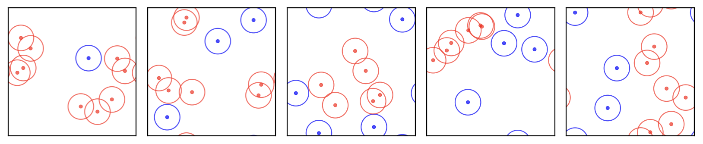
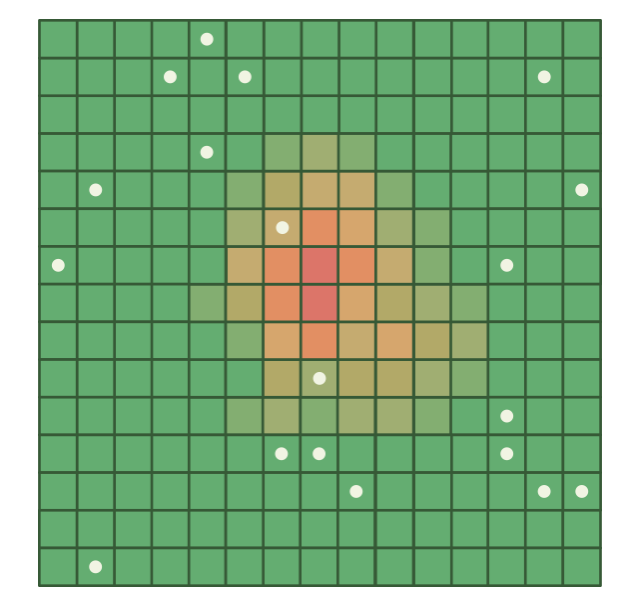
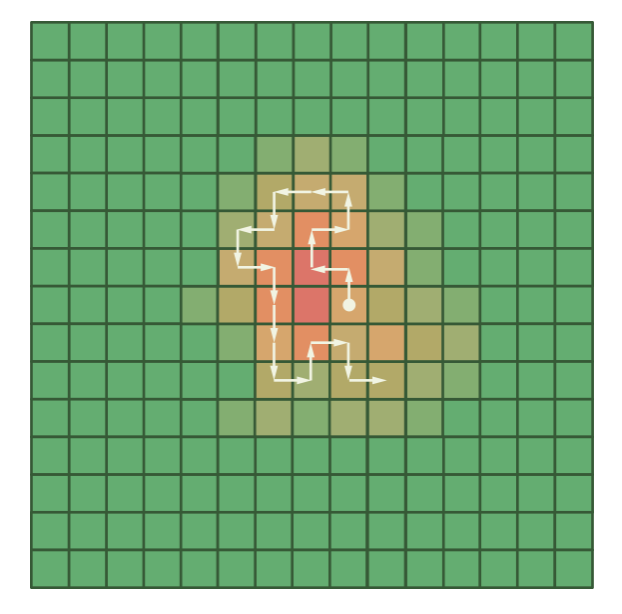
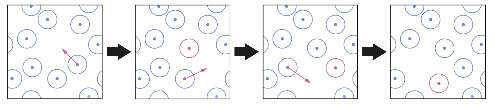
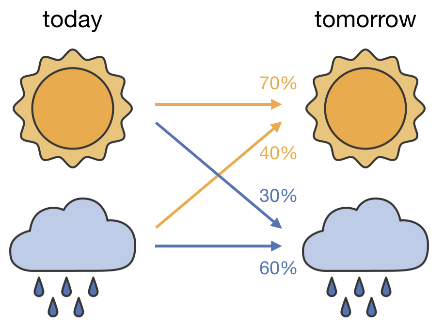
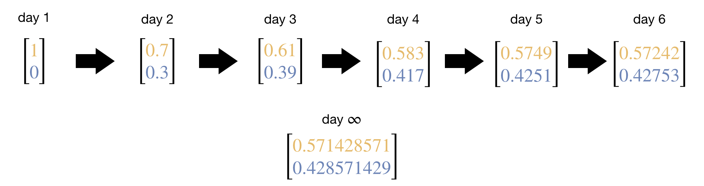
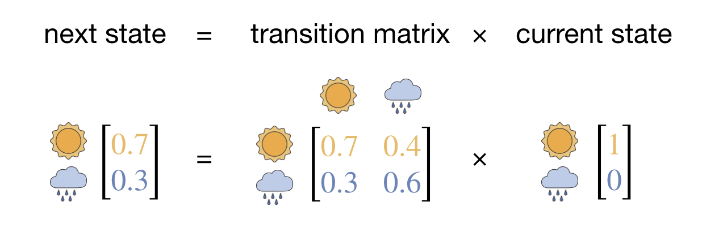

Lecture 2 Monte Carlo Methods Applied to Chemical Systems
2.1 Introduction to Non-Uniform Sampling
The previous lecture introduced the general idea behind Monte Carlo methods: using repeated random sampling to obtain numerical results. In the first lecture, we focussed on the problem of calculating some property \(A\) as an average over a large set of states.
Recall from the first lecture that for any property A, its true average value is calculated as a sum over all possible states:
\[ \langle A \rangle = \sum_i A_i \times P_i \]
where \(A_i\) is the value of property A in state \(i\), and \(P_i\) is the probability of state \(i\) occurring. In many problems of this type, evaluating this sum exactly is impossible due to the existence of an enormous number of states. Monte Carlo methods allow us to estimate \(\langle A \rangle\) by sampling a subset of randomly chosen states.
In the examples in Lecture 1, we used uniform sampling—where each possible location in our sample space has an equal probability of being selected. In these examples, uniform sampling was effective because it allowed us to efficiently explore the regions of sample space relevant to the property we were estimating.
For chemical systems at equilibrium, however, uniform sampling is highly inefficient, frequently to the extent of being computationally intractable, and we instead use non-uniform sampling to more efficiently estimate \(\langle A \rangle\).
2.2 Boltzmann Sampling and the Inefficiency of Uniform Sampling
For chemical systems at equilibrium, states are distributed according to the Boltzmann distribution:
\[ P(\mathbf{r}) = \frac{\exp(-U(\mathbf{r})/k_\mathrm{B}T)}{Z} \]
where the partition function \(Z\) is:
\[ Z = \sum_{\mathbf{r}} \exp(-U(\mathbf{r})/k_\mathrm{B}T) \]
If we were to sample uniformly, we might initially propose estimating \(\langle A \rangle\) via:
\[ \langle A \rangle \approx \frac{1}{Z} \sum_{i=1}^N A(r_i) \exp(-U(r_i)/k_\mathrm{B}T) \]
However, this approach requires knowing \(Z\), which we typically cannot compute directly as it involves summing over all possible states—the very challenge we’re using Monte Carlo to overcome.
We can work around this by writing the full expression for the average and seeing how \(Z\) cancels. Starting from the exact definition:
\[ \langle A \rangle = \sum_i A_i \times P_i = \sum_i A_i \times \frac{\exp(-U_i/k_\mathrm{B}T)}{Z} = \frac{1}{Z}\sum_i A_i \exp(-U_i/k_\mathrm{B}T) \]
If we sample \(N\) configurations uniformly, the numerator is estimated by \(\frac{1}{N}\sum_{i=1}^N A(r_i) \exp(-U(r_i)/k_\mathrm{B}T)\) and the partition function \(Z\) itself is estimated by \(\frac{1}{N}\sum_{i=1}^N \exp(-U(r_i)/k_\mathrm{B}T)\). Taking the ratio, the factors of \(1/N\) cancel, giving:
\[ \langle A \rangle \approx \frac{\sum_{i=1}^N A(r_i) \exp(-U(r_i)/k_\mathrm{B}T)}{\sum_{i=1}^N \exp(-U(r_i)/k_\mathrm{B}T)} \]
This estimator requires no prior knowledge of \(Z\)—the partition function cancels between numerator and denominator.
However, even with this improved estimator, uniform sampling remains highly inefficient for chemical systems. The Boltzmann factor decreases exponentially as energy increases, meaning any property \(\langle A \rangle\) is dominated by contributions from a relatively small number of low-energy states. The vast majority of possible states have high energies with negligible Boltzmann weights, yet these states occupy most of the configuration space.
In a system with just 10 atoms, uniform sampling would predominantly generate configurations with atoms positioned unphysically close to each other. Fewer than about 1 in 200 uniformly sampled configurations (roughly 0.5%) have physically reasonable energies—the remaining 99.5% have atoms overlapping or sitting unphysically close together, giving effectively zero Boltzmann weights. These configurations contribute nothing to our estimate of \(\langle A \rangle\), yet uniform sampling spends nearly all of its effort generating them (Figure 2.1). This inefficiency worsens exponentially with system size, making uniform sampling computationally unfeasible for most chemical systems of interest.

Figure 2.1: Five randomly generated configurations of a small molecular system. In most configurations, atoms overlap or sit unphysically close together (red), producing extremely high energies and negligible Boltzmann weights. Only a tiny fraction of uniformly sampled configurations have physically reasonable arrangements.
We need an alternative approach—a method that preferentially samples the low-energy regions that dominate the Boltzmann distribution.
2.3 The Idea Behind Markov Chain Monte Carlo
In Lecture 1, we discussed estimating the average height of people in the UK by measuring a representative sample. If we attempted uniform geographical sampling—randomly selecting 100m × 100m squares on a map of the UK and measuring everyone within each selected square (Figure 2.2)—we would encounter severe inefficiency. Most selected squares would contain few or no people (falling on rural areas, forests, mountains, or bodies of water), while densely populated urban areas would be underrepresented. We would waste most of our sampling effort on empty regions while gathering insufficient data from cities and towns, where the majority of people live (Figure 2.3).
Figure 2.2: Uniform geographical sampling: the UK is divided into a grid of equal-sized squares, and squares are selected at random. Each selected square is sampled regardless of whether anyone lives there.

Figure 2.3: Uniform sample points (white dots) on a population density heatmap (green = sparse, red = dense). Most points fall on sparsely populated areas, wasting sampling effort, while the densely populated centre is undersampled.
A more efficient approach to our height-measuring problem would be to design a sampling process that naturally visits locations with frequency proportional to their population density. Imagine a “random walker” traversing the UK, who:
- Spends most time in cities and towns
- Occasionally visits villages and small settlements
- Rarely ventures into uninhabited areas
This walker would measure the height of individuals encountered during the journey. The crucial insight is that if our walker visits each location with probability exactly proportional to the number of people there, then each person in the UK has an equal chance of being included in our sample. This means we can calculate a simple, unweighted average of the measured heights without any correction factors (Figure 2.4).

Figure 2.4: A random walker (white path) on the population density heatmap. Unlike the uniform sampling points, the walker naturally concentrates its steps in the densely populated region (red/orange centre), spending little time in sparsely populated areas.
This is precisely the approach of Markov Chain Monte Carlo (MCMC) methods. Instead of generating independent random samples with uniform probability, we create a “chain” of samples where each new sample is generated based on the current one. In our molecular system, “locations” become molecular configurations and “population density” becomes the Boltzmann distribution. The chain is designed to visit configurations with frequency proportional to their Boltzmann probability, concentrating sampling effort on the low-energy regions that dominate thermodynamic averages.
When our sampling frequency matches the Boltzmann distribution, we can calculate thermodynamic properties using simple averaging:
\[ \langle A \rangle \approx \frac{1}{N} \sum_{i=1}^N A(\mathbf{r}_i) \]
where configurations \(\mathbf{r}_i\) are selected with frequency proportional to \(\exp(-U(\mathbf{r}_i)/k_\mathrm{B}T)\).
In a molecular simulation, each step of the chain involves selecting one molecule and displacing it by a small random amount, generating a new configuration that is close to the current one (Figure 2.5):

Figure 2.5: Generating new configurations in MCMC. At each step, one molecule (red) is displaced by a small random amount from its current position, producing a new configuration similar to the current one.
The challenge now becomes designing a sampling process that visits configurations with frequencies matching their Boltzmann probabilities, without requiring prior knowledge of the full energy landscape.
2.4 What is a Markov Chain?
The tool we need for sampling according to the Boltzmann distribution is called a “Markov chain.” A Markov chain is a sequence of states where each new state emerges from the current one through a probabilistic process. For a simple example, consider a weather model where tomorrow’s weather depends only on today’s weather (Figure 2.6): if it’s sunny today, there might be a 70% chance of sun tomorrow and 30% chance of rain; if it’s raining today, there might be a 60% chance of continued rain and 40% chance of sun tomorrow.

Figure 2.6: A two-state Markov chain for weather. The arrows show the transition probabilities: from each state (today), the probabilities of reaching each state (tomorrow) sum to 100%.
The defining characteristic of a Markov chain is its “memoryless” property—the next state depends only on the current state, not on the history of previous states. In our weather example, this means that if it’s sunny today, the probability of sun tomorrow is 70% regardless of whether yesterday was sunny or rainy. You might think a more realistic weather model would account for history—for instance, if it has been raining for three days straight, continued rain might seem more likely than if it only started raining today. Such a model would be non-Markovian, because tomorrow’s weather would depend not just on today but on the sequence of previous days. Our Markov chain model is deliberately simpler: only today’s state matters.
Why is this simplification useful for our sampling problem? Because, as we will see shortly, the memoryless property gives Markov chains a powerful convergence guarantee: regardless of where they start, they will settle into a well-defined stationary distribution. If we can design a Markov chain whose stationary distribution is the Boltzmann distribution, our sampling problem is solved.
2.4.1 Generating a chain of states
We can use the transition probabilities to generate a sequence of weather states. Suppose we start on a sunny day. We generate a random number: if it falls below 0.7 we stay sunny, otherwise we switch to rain. From that new state we apply the same rule again, and so on:
Sunny → Sunny → Sunny → Rainy → Rainy → Sunny → Rainy → …
Because random numbers are involved, repeating the process gives a different sequence each time:
Sunny → Rainy → Rainy → Rainy → Sunny → Sunny → Sunny → …
Each sequence is a “chain” of states generated by the Markov process.
2.4.2 From chains to probabilities
Now suppose we want to answer the question: if today (day 1) is sunny, what is the probability that it is raining on day 6?
We could run many chains starting from “sunny” and count what fraction end up rainy on day 6. But there is a more direct approach. Instead of tracking a single definite state, we track a probability distribution over states.
On day 1, we know it is sunny, so our state is described by the probability vector:
\[\mathbf{p}_1 = \begin{bmatrix} 1 \\ 0 \end{bmatrix}\]
where the first entry is the probability of sun and the second is the probability of rain. This vector represents our state of knowledge about the system. On day 1 we know for certain that it is sunny, so the sun entry is 1. For future days we won’t know the actual weather, but we can describe how confident we are in each outcome. To find these probabilities on day 2, we apply the transition probabilities:
\[P(\text{sun on day 2}) = 0.7 \times P(\text{sun on day 1}) + 0.4 \times P(\text{rain on day 1}) = 0.7 \times 1 + 0.4 \times 0 = 0.7\] \[P(\text{rain on day 2}) = 0.3 \times P(\text{sun on day 1}) + 0.6 \times P(\text{rain on day 1}) = 0.3 \times 1 + 0.6 \times 0 = 0.3\]
So \(\mathbf{p}_2 = [0.7, \; 0.3]\). Repeating this day by day evolves the probability distribution forward in time:
\[\mathbf{p}_3 = [0.61, \; 0.39], \quad \mathbf{p}_4 = [0.583, \; 0.417], \quad \mathbf{p}_5 = [0.5749, \; 0.4251], \quad \ldots\]

Figure 2.7: Convergence to the stationary distribution. Starting from a probability vector \([1, 0]\) (certain sun on day 1), repeated application of the transition probabilities causes the probability vector to converge towards the stationary distribution.
Two things happen as we continue (Figure 2.7). First, we can now answer our question: by day 6, there is roughly a 43% chance of rain. Second, the probabilities are converging. After many days, the distribution settles to approximately \([0.571, \; 0.429]\) and stops changing—regardless of whether we started from “sunny” or “rainy” on day 1.
2.4.3 Convergence to a stationary distribution
The convergence we observed in the weather example is not a coincidence. Any Markov chain that is irreducible (can reach any state from any other state) and aperiodic (doesn’t cycle deterministically through a fixed pattern) will converge to a unique stationary distribution—a probability distribution that remains unchanged by further application of the transition rules. At this point, the probability of finding the system in each state stabilises to a constant value, even as the system continues to move between states. A system that has reached its stationary distribution is said to be in equilibrium: the overall distribution no longer changes, even though the system itself keeps transitioning between states.
Our weather model satisfies both conditions. To see why aperiodicity matters, imagine an extreme weather model where sun is always followed by rain and rain is always followed by sun. Starting from sun, the probability of sun would alternate: 1, 0, 1, 0, … — it oscillates forever rather than converging. Our model avoids this because there is always a non-zero probability of staying in the same state.
2.4.4 Matrix formulation
The procedure of evolving the probability distribution step by step can be written more compactly using linear algebra, where the probability distribution over states is represented by a state vector, and the set of transition probabilities that define our Markov chain are collected into a transition matrix \(P\) (Figure 2.8):
\[P = \begin{bmatrix} 0.7 & 0.4 \\ 0.3 & 0.6 \end{bmatrix}\]
Each column gives the transition probabilities from a particular state—the first column \([0.7, \; 0.3]\) lists the probabilities of going from sunny to each state, and the second column \([0.4, \; 0.6]\) lists the probabilities from rainy. The columns each sum to 1 because the system must go somewhere (including possibly staying in the same state).2 Evolving the probability distribution by one step is then a matrix–vector multiplication: \(\mathbf{p}_\mathrm{new} = P \cdot \mathbf{p}_\mathrm{current}\).

Figure 2.8: The matrix formulation of one step of the Markov chain. The next state vector equals the transition matrix multiplied by the current state vector.
Starting from day 1:
\[\mathbf{p}_2 = P \cdot \mathbf{p}_1 = \begin{bmatrix} 0.7 & 0.4 \\ 0.3 & 0.6 \end{bmatrix} \begin{bmatrix} 1 \\ 0 \end{bmatrix} = \begin{bmatrix} 0.7 \\ 0.3 \end{bmatrix}\]
\[\mathbf{p}_3 = P \cdot \mathbf{p}_2 = \begin{bmatrix} 0.7 & 0.4 \\ 0.3 & 0.6 \end{bmatrix} \begin{bmatrix} 0.7 \\ 0.3 \end{bmatrix} = \begin{bmatrix} 0.61 \\ 0.39 \end{bmatrix}\]
These are exactly the same numbers we calculated by hand. The matrix formulation simply packages the arithmetic into a single operation per step, and allows us to compactly write down the relevant equations even for much larger systems with many more than two states.
At the stationary distribution, applying the transition matrix leaves the probability vector unchanged. This means the stationary distribution \(\boldsymbol{\pi}\) satisfies:
\[\boldsymbol{\pi} = P \cdot \boldsymbol{\pi}\]
which is an eigenvalue equation with eigenvalue 1.3
For our sampling purpose, we need to design a Markov chain whose stationary distribution matches exactly the Boltzmann distribution. If we achieve this, then after running the chain for sufficient steps, the frequency with which we visit each configuration will naturally match its Boltzmann probability—solving our sampling problem.
2.5 Summary and Preview
Uniform sampling fails for chemical systems because the physically relevant low-energy configurations occupy a vanishingly small fraction of configuration space. Markov Chain Monte Carlo solves this by constructing a chain of configurations where each new configuration depends only on the current one (the Markov property), and the chain is designed so that configurations are visited with frequency proportional to their Boltzmann probability. This means we can estimate thermodynamic averages using a simple unweighted mean over the sampled configurations.
The remaining question is how to design the transition rules so that the chain converges to the Boltzmann distribution. In the next lecture, we’ll answer this through the principle of detailed balance and the Metropolis algorithm.
This is the “column-stochastic” convention. Some textbooks use the transpose (“row-stochastic”), where rows rather than columns sum to 1.↩︎
For our weather example, \(\boldsymbol{\pi} = [4/7, \; 3/7]\). You can verify: \(P \cdot \boldsymbol{\pi} = \bigl[\begin{smallmatrix} 0.7 & 0.4 \\ 0.3 & 0.6 \end{smallmatrix}\bigr] \bigl[\begin{smallmatrix} 4/7 \\ 3/7 \end{smallmatrix}\bigr] = \bigl[\begin{smallmatrix} 2.8/7 + 1.2/7 \\ 1.2/7 + 1.8/7 \end{smallmatrix}\bigr] = \bigl[\begin{smallmatrix} 4/7 \\ 3/7 \end{smallmatrix}\bigr] = \boldsymbol{\pi}\).↩︎